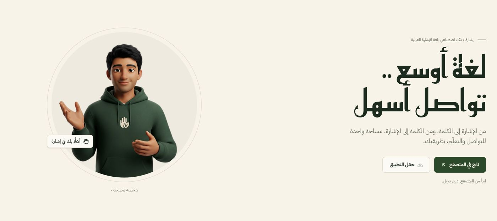
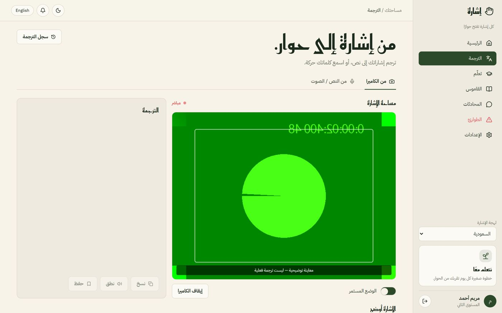

Part 6 · Web
Landing page: 9 sections, Arabic and English, light and dark
ImplementedDemo / mockNot connected

Part 6 · Web
The web app: home and the translate workspace
Click a state to see its screen
Camera tab · sign to text
Text / voice tab · text to sign
- Arabic input up to 200 characters with a live counter; browser speech recognition for voice Implemented
- 3D avatar stage in Three.js, falls back to an image without WebGL Demo
- Sign timeline chips, playback speed 0.5× / 1× / 1.5×, suggested phrases
The interface is complete and responsive, but it is not yet connected to the .NET backend or the AI service: home history, progress and the camera transcript use built-in sample data.
